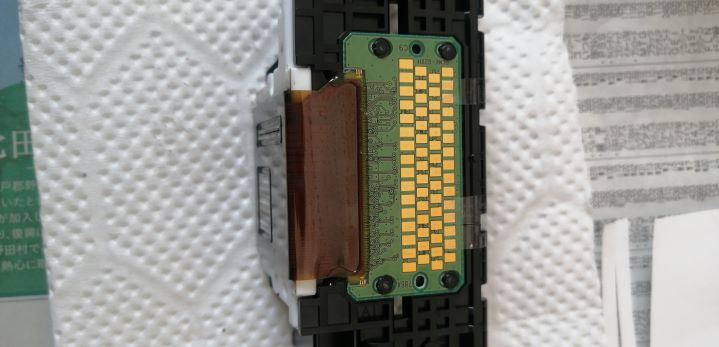

B200エラーを基板にテープで回避。顔料ブラック(PGBK)ノズル使えないけど、起動はする。
まずは結論から
プリンターはインクカートリッジ独立型ではなく、ヘッド一体型を買うべき。特に、純正インクを使わない前提の人はなおのことである。プリンターヘッドのトラブルが発生しても、インクカートリッジをポイ。で、新しいインクカートリッジをつければ、それですべて解決。独立型の場合は、プリンターの買い替えになる。一体型にはリスクがない。トータルでのコストが安い。世間一般の「独立型のほうが印刷コストが安い」というのは、純正インクしか使わず、しかもプリンターヘッドに問題が発生しないとても運のいい人の話。
プリンターヘッドの水洗い時に注意すべきこと
基盤部を水に触れさせないことが重要というが、そうではない。需要なのはノズル部周辺を傷つけないこと。傷つけてしまうとＢ２００エラーになる。
ノズルに詰まった黒インクを針で物理的に取り除くと、B200エラーになる。
水洗いしても、マジックリンでも駄目だったので、最後の手段で針で削り取ることにしたが、ノズル周辺を傷つけてしまってＢ２００エラーになってしまった.
基盤にテープを張って、b200エラーを回避
ネット情報をもとに、基盤にテープを張ったみる。
が、b200エラー。なので、一つずつ検証した。
最初は、基盤をすべて隠す。
 結果、プリンターヘッドがありません、となる。まぁ、当然の結果。
結果、プリンターヘッドがありません、となる。まぁ、当然の結果。
次に、上半分を隠す。
プリンターヘッドがありませんとなる。
一段目のみを隠す。
B200エラー。
 一段目と二段目の半分だけ隠すと、
一段目と二段目の半分だけ隠すと、
 インクがありませんとなる。
インクがありませんとなる。
 お？ということで、インクを入れてみる。
お？ということで、インクを入れてみる。


 印刷できるも、白紙。
印刷できるも、白紙。
一段目左半分を隠すと？


 インクがありません。
インクがありません。
この後、いろいろな組み合わせを試して、一段目左から1，2，3を隠せば「インクカートリッジがありません」になることを確認。これ以外だと、何らかのエラーが出た。
 写真は見にくいが、テープで基盤を隠している。
写真は見にくいが、テープで基盤を隠している。

 ノズルチェックを印刷すると、黄色のみ印刷。インクカートリッジにを補充して、
ノズルチェックを印刷すると、黄色のみ印刷。インクカートリッジにを補充して、

 見事印刷されるも、PGBKは印刷されず。染料ノズルのほうもなんか線が増えた。しかし、B200エラーを回避できた。
見事印刷されるも、PGBKは印刷されず。染料ノズルのほうもなんか線が増えた。しかし、B200エラーを回避できた。
B200エラーは回避できたが・・・・
PGBKは使えない。染料インクも線が出るし、カラー印刷は全体的に赤っぽくなる。
まとめ
印刷コストが安いとされる独立型インクカートリッジのプリンターだが、それはそもそも認識間違い。プリンターヘッドのトラブルのことを考えると、一体型のほうが安上がりだ。